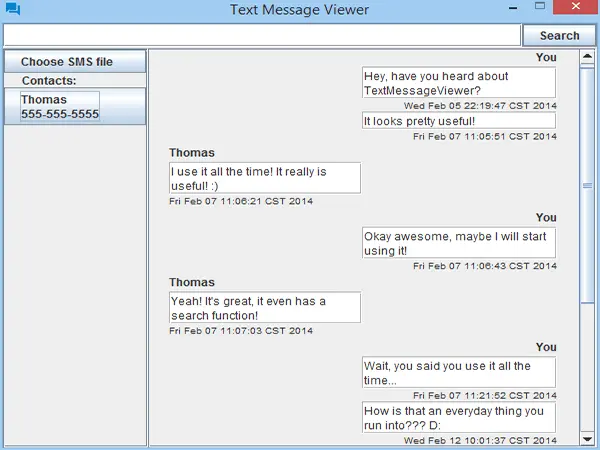

Professional Experience
I'm currently employed as a professional Android Developer. Although I'm a Texas native,
I've been living out of state since I graduated from college. I've lived in Columbus, Ohio
for the past 5 years but am excited to be moving to Seattle in the near future.
Immediately after graduating from Rice University, I was employed at JP Morgan working on
their Chase Pay mobile application. I helped shape its initial public release in November 2016
and continued work on it until its 2.0 release.
At that point, I moved over to L Brands and focused my work on the PINK Nation and Victoria's Secret Android apps,
although I had to work on the Bath & Body Works app on occasion. My primary focus at L Brands was leading Android
development on an internal Shopping library that powered the shopping experinece in both the VS and PINK applications.
As of May 2021, I am working at Zillow as a Senior SDE. I am excited for the opportunity
and hope that my retail knowledge transfers over!
For more detailed information on my professional experiences, take a look at my profile on LinkedIn!
Articles
I have recently been trying to write more articles, mostly on programming and programming-related topics. If you are interested in reading them, please check them out at https://jdvp.me/articles/. I usually write about Android topics since I have more experience there than elsewhere but would like to branch out more into other topics in which I am more of a hobbyist, such as Jekyll or scripting on a NAS.
I have set up commenting on the articles so please feel free to ask any questions or leave any feedback (even just on writing style if you'd like). The site should also work with atom-readers if you'd prefer to keep up-to-date that way.
Active Personal Projects
These are projects that I am actively engaged on and improving
Notification Launcher
Notification Launcher is an Android app that allows scheduling of notifications for any app
on your phone. It also can be used to share reminders from other apps.
See the Google Play Store Listing
for more details.
Animosaic
Animosaic is a web app that lets users create mosaics of images using the cover
art from multiple anime series. The duck mosaic above was made using the app.
You can check it out here!
Inactive Projects
These are projects that I am no longer working on for various reasons. If you happen to use any of them
though and have an idea for an update, feel free to reach out and let me know!
Statistexts
Statistexts is an Android application that allows users to see how responsive their contacts
are and how they compare to each other.
See more details on its official website.
RHApp
An Android application used by Rice University students to allow them to be more connected
to their Resident Health Associates. Created as a part of the HackRice 2015 hackathon.
More details can be found here.

TextMessageViewer
TextMessageViewer is an Java executable that allows for users to view SMS backup
files generated by apps such as SMS Backup & Restore on their PC.
More info and download links can be found here.
Interests and Hobbies
My interests include mobile development, which explains my day job, and web development
which I do as more of a hobby. I don't keep up with web frameworks since (from my perspective)
they seem to change so fast and I go long stretches of time without doing web apps. I think it
would also be really cool to do video game programming but to be honest, I'm not sure entirely
what that entails!
When I'm not programming, I like to try to stay active by hiking and visiting the Metro Parks
that Columbus has to offer. Since I'm stuck in a cubicle for hours every day, I try to make
it to the gym as often as I can.
I also really like watching anime and playing video games! I really enjoy RPGs and some of my
favorite games I've played lately include Nier: Automata, Horizon Zero Dawn, and Persona 5. I won
a Nintendo Switch in an arcade game (it's possible!) and have been playing it pretty often. If you
need game or anime recommendations, let me know!